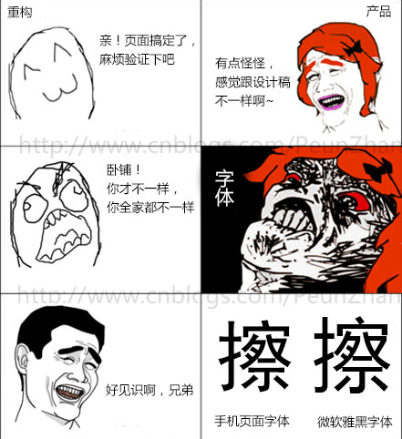
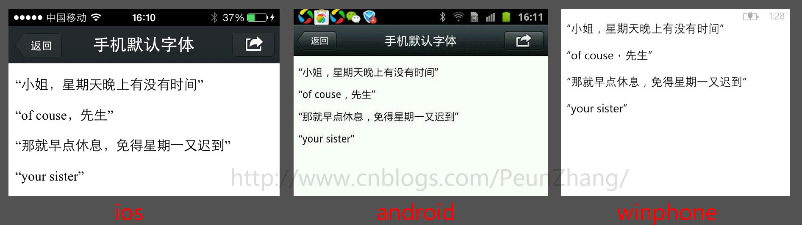
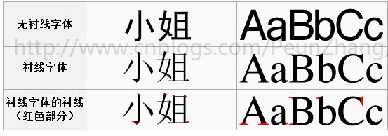

<!DOCTYPE HTML>
<html lang="zh-CN">
<head><meta name="generator" content="Hexo 3.8.0">
    <!--Setting-->
    <meta charset="UTF-8">
    <meta name="viewport" content="width=device-width, user-scalable=no, initial-scale=1.0, maximum-scale=1.0, minimum-scale=1.0">
    <meta http-equiv="X-UA-Compatible" content="IE=Edge,chrome=1">
    <meta http-equiv="Cache-Control" content="no-siteapp">
    <meta http-equiv="Cache-Control" content="no-transform">
    <meta name="renderer" content="webkit|ie-comp|ie-stand">
    <meta name="apple-mobile-web-app-capable" content="王永杰的网络日志">
    <meta name="apple-mobile-web-app-status-bar-style" content="black">
    <meta name="format-detection" content="telephone=no,email=no,adress=no">
    <meta name="browsermode" content="application">
    <meta name="screen-orientation" content="portrait">
    <link rel="dns-prefetch" href="http://wangyongjie.top">
    <!--SEO-->

    <meta name="keywords" content="CSS">


    <meta name="description" content="web123body &#123;    font-family: -apple-system, BlinkMacSystemFont, " pingfang sc","helvetica neu...">


<meta name="robots" content="all">
<meta name="google" content="all">
<meta name="googlebot" content="all">
<meta name="verify" content="all">

    <!--Title-->


<title>字体设置 | 王永杰的网络日志</title>


    <link rel="alternate" href="/atom.xml" title="王永杰的网络日志" type="application/atom+xml">


    <link rel="icon" href="/favicon.ico">

    


<link rel="stylesheet" href="/css/bootstrap.min.css?rev=3.3.7">
<link rel="stylesheet" href="/css/font-awesome.min.css?rev=4.5.0">
<link rel="stylesheet" href="/css/style.css?rev=@@hash">


    


    <script>
        var _hmt = _hmt || [];
        (function() {
            var hm = document.createElement("script");
            hm.src = "https://hm.baidu.com/hm.js?f42ffe5fed856accbf91820f137dab46";
            var s = document.getElementsByTagName("script")[0];
            s.parentNode.insertBefore(hm, s);
        })();
    </script>


    

</head>

</html>
<!--[if lte IE 8]>
<style>
    html{ font-size: 1em }
</style>
<![endif]-->
<!--[if lte IE 9]>
<div style="ie">你使用的浏览器版本过低，为了你更好的阅读体验，请更新浏览器的版本或者使用其他现代浏览器，比如Chrome、Firefox、Safari等。</div>
<![endif]-->

<body>
    <header class="main-header" style="background-image:url(http://snippet.shenliyang.com/img/banner.jpg)">
    <div class="main-header-box">
        <a class="header-avatar" href="/" title="wangyongjie">
            
        </a>
        <div class="branding">
        	<!--<h2 class="text-hide">Snippet主题,从未如此简单有趣</h2>-->
            
                <h2> 我是谁 我在哪 我在做什么 </h2>
            
    	</div>
    </div>
</header>
    <nav class="main-navigation">
    <div class="container">
        <div class="row">
            <div class="col-sm-12">
                <div class="navbar-header"><span class="nav-toggle-button collapsed pull-right" data-toggle="collapse" data-target="#main-menu" id="mnav">
                    <span class="sr-only"></span>
                        <i class="fa fa-bars"></i>
                    </span>
                    <a class="navbar-brand" href="http://wangyongjie.top">王永杰的网络日志</a>
                </div>
                <div class="collapse navbar-collapse" id="main-menu">
                    <ul class="menu">
                        
                            <li role="presentation" class="text-center">
                                <a href="/"><i class="fa "></i>首页</a>
                            </li>
                        
                            <li role="presentation" class="text-center">
                                <a href="/categories/前端/"><i class="fa "></i>前端</a>
                            </li>
                        
                            <li role="presentation" class="text-center">
                                <a href="/categories/后端/"><i class="fa "></i>后端</a>
                            </li>
                        
                            <li role="presentation" class="text-center">
                                <a href="/categories/工具/"><i class="fa "></i>工具</a>
                            </li>
                        
                            <li role="presentation" class="text-center">
                                <a href="/webnav/"><i class="fa "></i>导航</a>
                            </li>
                        
                            <li role="presentation" class="text-center">
                                <a href="/archives/"><i class="fa "></i>时间轴</a>
                            </li>
                        
                            <li role="presentation" class="text-center">
                                <a href="/message/"><i class="fa "></i>留言板</a>
                            </li>
                        
                            <li role="presentation" class="text-center">
                                <a href="/about/"><i class="fa "></i>关于</a>
                            </li>
                        
                    </ul>
                </div>
            </div>
        </div>
    </div>
</nav>
    <section class="content-wrap">
        <div class="container">
            <div class="row">
                <main class="col-md-8 main-content m-post">
                    <p id="process"></p>
<article class="post">
    <div class="post-head">
        <h1 id="字体设置">
            
	            字体设置
            
        </h1>
        <div class="post-meta">
    
        <span class="categories-meta fa-wrap">
            <i class="fa fa-folder-open-o"></i>
            <a class="category-link" href="/categories/前端/">前端</a>
        </span>
    

    
        <span class="fa-wrap">
            <i class="fa fa-tags"></i>
            <span class="tags-meta">
                
                    <a class="tag-link" href="/tags/CSS/">CSS</a>
                
            </span>
        </span>
    

    
        
        <span class="fa-wrap">
            <i class="fa fa-clock-o"></i>
            <span class="date-meta">2018/03/17</span>
        </span>
        
    
</div>
            
            
            <p class="fa fa-exclamation-triangle warning">
                本文于<strong>369</strong>天之前发表，文中内容可能已经过时。
            </p>
        
    </div>
    
    <div class="post-body post-content">
        <h2 id="web"><a href="#web" class="headerlink" title="web"></a>web</h2><figure class="highlight css"><table><tr><td class="gutter"><pre><span class="line">1</span><br><span class="line">2</span><br><span class="line">3</span><br></pre></td><td class="code"><pre><span class="line"><span class="selector-tag">body</span> &#123;</span><br><span class="line">    <span class="attribute">font-family</span>: -apple-system, BlinkMacSystemFont, <span class="string">"PingFang SC"</span>,<span class="string">"Helvetica Neue"</span>,STHeiti,<span class="string">"Microsoft Yahei"</span>,Tahoma,Simsun,sans-serif;</span><br><span class="line">&#125;</span><br></pre></td></tr></table></figure>
<h2 id="移动端网站如何定义字体font-family"><a href="#移动端网站如何定义字体font-family" class="headerlink" title="移动端网站如何定义字体font-family"></a>移动端网站如何定义字体font-family</h2><p></p>
<blockquote>
<p>很多懒友在使用自定义字体时候，很容易像PC端那样定义，其实安卓和ISO系统，对中文字体是不支持，所以定义以后看到效果不是直接定义字体效果，如果需要定义大家会想到<font color="blue"><a href="https://www.w3cplus.com/content/css3-font-face" target="_blank" rel="noopener">@font-face</a> </font>定义为微软雅黑字体并存放到 web 服务器上，在需要使用时被自动下载</p>
</blockquote>
<figure class="highlight css"><table><tr><td class="gutter"><pre><span class="line">1</span><br><span class="line">2</span><br><span class="line">3</span><br><span class="line">4</span><br><span class="line">5</span><br><span class="line">6</span><br><span class="line">7</span><br><span class="line">8</span><br></pre></td><td class="code"><pre><span class="line">@<span class="keyword">font-face</span> &#123;</span><br><span class="line">    <span class="attribute">font-family</span>: <span class="string">'MicrosoftYaHei'</span>;</span><br><span class="line">    <span class="attribute">src</span>: <span class="built_in">url</span>(<span class="string">'MicrosoftYaHei.eot'</span>); <span class="comment">/* IE9 Compat Modes */</span></span><br><span class="line">    <span class="attribute">src</span>: <span class="built_in">url</span>(<span class="string">'MicrosoftYaHei.eot?#iefix'</span>) <span class="built_in">format</span>(<span class="string">'embedded-opentype'</span>), <span class="comment">/* IE6-IE8 */</span></span><br><span class="line">             <span class="built_in">url</span>(<span class="string">'MicrosoftYaHei.woff'</span>) <span class="built_in">format</span>(<span class="string">'woff'</span>), <span class="comment">/* Modern Browsers */</span></span><br><span class="line">             <span class="built_in">url</span>(<span class="string">'MicrosoftYaHei.ttf'</span>)  <span class="built_in">format</span>(<span class="string">'truetype'</span>), <span class="comment">/* Safari, Android, iOS */</span></span><br><span class="line">             <span class="built_in">url</span>(<span class="string">'MicrosoftYaHei.svg#MicrosoftYaHei'</span>) <span class="built_in">format</span>(<span class="string">'svg'</span>); <span class="comment">/* Legacy iOS */</span></span><br><span class="line">   &#125;</span><br></pre></td></tr></table></figure>
<blockquote>
<p>问题虽然解决了，但是这样操作很消耗用户流量，也对页面打开造成了很大延迟。<br>我们在一起看看三大主流系统他们字体到底支持哪些呢？</p>
</blockquote>
<h3 id="ios-系统"><a href="#ios-系统" class="headerlink" title="ios 系统"></a>ios 系统</h3><ul>
<li>默认中文字体是<a href="https://stackoverflow.com/questions/9918421/what-is-the-default-font-in-chinese-environment" target="_blank" rel="noopener">Heiti SC</a></li>
<li>默认英文字体是<a href="https://stackoverflow.com/questions/3838336/iphone-system-font" target="_blank" rel="noopener">Helvetica</a></li>
<li>默认数字字体是HelveticaNeue</li>
<li>无微软雅黑字体</li>
</ul>
<h3 id="android-系统"><a href="#android-系统" class="headerlink" title="android 系统"></a>android 系统</h3><ul>
<li>默认中文字体是Droidsansfallback</li>
<li>默认英文和数字字体是Droid Sans</li>
<li>无微软雅黑字体</li>
</ul>
<h3 id="winphone-系统"><a href="#winphone-系统" class="headerlink" title="winphone 系统"></a>winphone 系统</h3><ul>
<li>默认中文字体是Dengxian(方正等线体)</li>
<li>默认英文和数字字体是Segoe</li>
<li>无微软雅黑字体</li>
</ul>
<p>附：<a href="https://support.apple.com/en-us/HT202771" target="_blank" rel="noopener">ios7字体列表</a></p>
<p>并做了个小测试，下图为测试机 iphone 4s、三星 GT-N7000 android 2.3.6、HTC windows Phone 8.0 三种手机中的默认中文字体和英文字体展现：<br></p>
<p>我们可以看出三种不同的中文字体和微软雅黑一样是<a href="https://zh.wikipedia.org/wiki/%E6%97%A0%E8%A1%AC%E7%BA%BF%E4%BD%93" target="_blank" rel="noopener">无衬线字体</a>，有无衬线只是一个小原因，而无论页面中使用哪种字体，肉眼很难看出它们的差异，对产品的体验几乎没有影响。</p>
<p>有关衬线字体和无衬线字体的差别，参考下图：</p>
<p></p>
<p>那么，<font color="red">使用系统默认的字体所达到的视觉效果跟使用微软雅黑字体没有明显的差别</font>，权衡利弊，最终说服了产品经理放弃使用微软雅黑的想法。</p>
<figure class="highlight plain"><table><tr><td class="gutter"><pre><span class="line">1</span><br><span class="line">2</span><br><span class="line">3</span><br><span class="line">4</span><br><span class="line">5</span><br></pre></td><td class="code"><pre><span class="line">各个手机系统有自己的默认字体，一般不支持我们常用字体，例如微软雅黑等；</span><br><span class="line">如无特殊需求，手机端无需定义中文字体，使用系统默认即可。</span><br><span class="line">英文字体和数字字体可使用 Helvetica ，三种系统都支持。</span><br><span class="line">/* 移动端定义字体的代码 */</span><br><span class="line">body&#123;font-family:Helvetica;&#125;</span><br></pre></td></tr></table></figure>
<blockquote>
<p>使用默认的就行，一般特殊字体，你本地开发的话，你还可以自行安装对应字体包，但用户可不会安装什么字体包！所以，针对设计师给的特殊字体，要么弄成图片展示，以达到最好的设计效果，但这样就会增加请求数量，带来一定的性能损耗。要么，就是使用@font-face定义字体，但一般字体包都特别大，有的甚至以M计，而且也是需要下载，所以还不如直接切成图呢！</p>
</blockquote>
<h2 id="总结"><a href="#总结" class="headerlink" title="总结"></a>总结</h2><ul>
<li>各个手机系统有自己的默认字体，且都不支持微软雅黑</li>
<li>如无特殊需求，手机端无需定义中文字体，使用系统默认</li>
<li>英文字体和数字字体可使用 Helvetica ，三种系统都支持</li>
</ul>
<p><br><strong>本文作者</strong>：王永杰<br><strong>本文地址</strong>： <a href="http://wangyongjie.top/blog/6152/">http://wangyongjie.top/blog/6152/</a> <br><strong>版权声明</strong>：本博客所有文章除特别声明外，均采用 <a href="http://creativecommons.org/licenses/by-nc-sa/3.0/cn/" target="_blank" rel="noopener">CC BY-NC-SA 3.0 CN</a> 许可协议。转载请注明出处！</p>

    </div>
    
        <div class="reward" ontouchstart>
    <div class="reward-wrap">赏
        <div class="reward-box">
            
                <span class="reward-type">
                    <b>支付宝打赏</b>
                </span>
            
            
                <span class="reward-type">
                    <b>微信打赏</b>
                </span>
            
        </div>
    </div>
    <p class="reward-tip">一分也是爱</p>
</div>


    
    <div class="post-footer">
        <div>
            
                转载声明：商业转载请联系作者获得授权,非商业转载请注明出处 <a href="http://wangyongjie.top" target="_blank"> http://wangyongjie.top</a>
            
        </div>
        <div>
            
        </div>
    </div>
</article>

<div class="article-nav prev-next-wrap clearfix">
    
        <a href="/blog/49453/" class="pre-post btn btn-default" title="请停止css-in-js的行为">
            <i class="fa fa-angle-left fa-fw"></i><span class="hidden-lg">上一篇</span>
            <span class="hidden-xs">请停止css-in-js的行为</span>
        </a>
    
    
        <a href="/blog/17102/" class="next-post btn btn-default" title="元素宽高及浏览器视口参数">
            <span class="hidden-lg">下一篇</span>
            <span class="hidden-xs">元素宽高及浏览器视口参数</span><i class="fa fa-angle-right fa-fw"></i>
        </a>
    
</div>


    <div id="comments">
        
	
<div id="lv-container" data-id="city" data-uid="MTAyMC8zNDc5OS8xMTMzNg==">
  <script type="text/javascript">
     (function(d, s) {
         var j, e = d.getElementsByTagName(s)[0];
         if (typeof LivereTower === 'function') { return; }
         j = d.createElement(s);
         j.src = 'https://cdn-city.livere.com/js/embed.dist.js';
         j.async = true;
         e.parentNode.insertBefore(j, e);
     })(document, 'script');
  </script>
</div>


    </div>


                </main>
                
                    <aside id="article-toc" role="navigation" class="col-md-4">
    <div class="widget">
        <h3 class="title">文章目录</h3>
        
            <ol class="toc"><li class="toc-item toc-level-2"><a class="toc-link" href="#web"><span class="toc-text">web</span></a></li><li class="toc-item toc-level-2"><a class="toc-link" href="#移动端网站如何定义字体font-family"><span class="toc-text">移动端网站如何定义字体font-family</span></a><ol class="toc-child"><li class="toc-item toc-level-3"><a class="toc-link" href="#ios-系统"><span class="toc-text">ios 系统</span></a></li><li class="toc-item toc-level-3"><a class="toc-link" href="#android-系统"><span class="toc-text">android 系统</span></a></li><li class="toc-item toc-level-3"><a class="toc-link" href="#winphone-系统"><span class="toc-text">winphone 系统</span></a></li></ol></li><li class="toc-item toc-level-2"><a class="toc-link" href="#总结"><span class="toc-text">总结</span></a></li></ol>
        
    </div>
</aside>

                
            </div>
        </div>
    </section>
    <footer class="main-footer">
    <div class="container">
        <div class="row">
        </div>
    </div>
</footer>

<a id="back-to-top" class="icon-btn hide">
	<i class="fa fa-chevron-up"></i>
</a>


    <div class="copyright">
    <div class="container">
        <div class="row">
            <div class="col-sm-12">
                <div class="busuanzi">
    
</div>

            </div>
            <div class="col-sm-12">
                <span>Copyright &copy; 2019
                </span> |
                <span>
                    Powered by <a href="//hexo.io" class="copyright-links" target="_blank" rel="nofollow">Hexo</a>
                </span> |
                <span>
                    Theme by <a href="//github.com/shenliyang/hexo-theme-snippet.git" class="copyright-links" target="_blank" rel="nofollow">Snippet</a>
                </span>
            </div>
        </div>
    </div>
</div>


<script src="/js/app.js?rev=@@hash"></script>

</body>
</html>